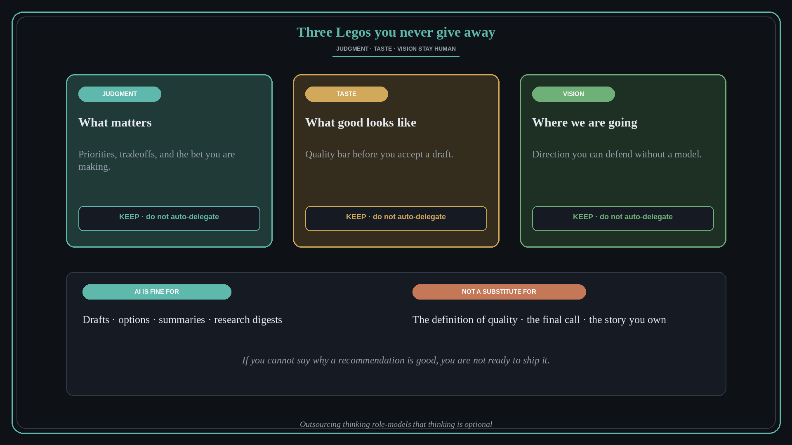

Never give away judgment, taste, and vision
Source: Molly Graham (@molly_g) via Lenny Rachitsky (@lennysan)
original post · podcast
What it claims
“Give away your Legos” still holds for most work — but Molly adds a hard caveat for the AI era. Things that require judgment, trust, and a definition of quality should stay with humans. If you do not know what good looks like, you cannot delegate to any intern, AI or otherwise.
Why it matters for a PO
Roadmap bets, acceptance criteria, and stakeholder framing are judgment work. Auto-generating a strategy memo or a priority list without owning the taste bar role-models outsourcing thinking. Your team copies that signal.
3 takeaways
- Keep three Legos: judgment (what matters), taste (what good looks like), vision (where we are going).
- Use AI for drafts and options — not for the final definition of quality.
- If you cannot explain why a recommendation is good, you are not ready to ship it.
Practice this week
Before accepting an AI-drafted PRD or priority list, write three sentences only you can own: the bet, the quality bar, and the “why now.” If you cannot, rewrite before sharing.
Also from
- Molly Graham (@molly_g) via Lenny Rachitsky (@lennysan), original post (merged from lesson 257): Delegating to AI is not giving your Legos away. With a person you could hand off and walk away; with AI, oversight and the final product stay with you. Accountability does not transfer, so the cognitive load does not either. Budget review time the way you would for a junior PM.